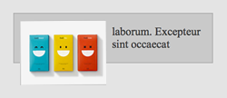

el caso típico
Si miramos a la imagen de al lado nadie diría que es algo especialmente difícil de maquetar. Sin embargo podemos encontrarnos algún que otro problemilla.
Maquetamos un contenedor por aqui... ponemos un textito por allá... y nada, flotamos la imagen para que... ops. Parece que como si la imagen no estuviese empujando el contenedor... mmm... cachisenlamar!!
 Esta situación nos la vamos a encontrar más veces de las que pensamos. Cuando uno no sabe por dónde tirar tiene la tentación de flotar el contenedor y darle un ancho, pero no es ni de lejos la solución más elegante. No deberíamos de flotar nada que no deba de hacerlo de verdad para evitarnos sorpresas o comportamientos raretes entre navegadores.
Vamos a ver varias soluciones, unas más limpias que otras. Lo mejor es conocerlas todas y aplicar la que mejor convenga en cada momento.